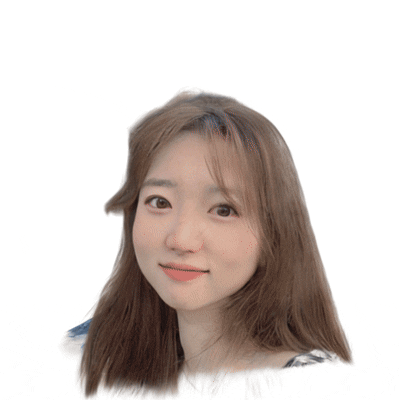

I am a second-year Master student at KAIST Visual Media Lab advised by Prof. Junyong Noh.
I work at the intersection of computer vision and computer graphics, focused on controllable generative AI for 3D content. My research explores diffusion and flow-based models — leveraging 2D diffusion priors or combining 3D flow model latents with neural representations for stylization, editing, and reconstruction.
50+ papers shared with research group · 18+ months · 4 core areas